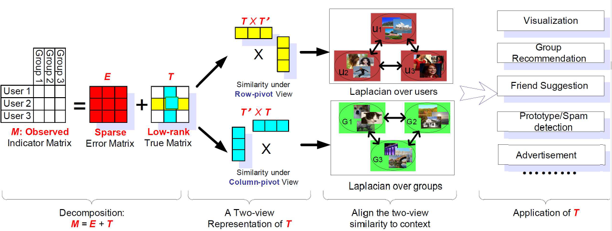
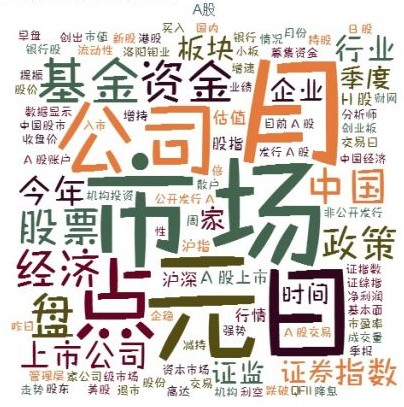

Independently completed the research and built a hash tag recommendation model based on low-rank matrix recovery technique
Researched on content-based, collaborative filtering recommendation method and used Python to program the developed model based on Weibo tags, users and resources information to achieve personalized recommendation
Analyzed Internet usage and end-of-life preparation patterns of 143 LGBT seniors across 5 cities with 231 variables, using SPSS and R
Interviewed 5 LGBT seniors on their satisfaction with their current life and the effort they have made to pursue happiness

Tagged emotional tendencies on over 950 pieces of text data from a financial market
Used Python to code the prediction model and researched ways to improve the accuracy of prediction from 65% to 75% by optimizing data-tag accuracy